[10]:
# Remove input cells at runtime (nbsphinx)
import IPython.core.display as d
d.display_html('<script>jQuery(function() {if (jQuery("body.notebook_app").length == 0) { jQuery(".input_area").toggle(); jQuery(".prompt").toggle();}});</script>', raw=True)
Optimization cuts¶
WARNING:
This notebook contains discontinued code and old results. They are kept here momentarily in order to save this kind of information and reproduce it with pyirf .
Author(s):
Dr. Michele Peresano (CEA-Saclay/IRFU/DAp/LEPCHE), 2020 based on previous work by J. Lefacheur.
Description:
This notebook contains DL3 benchmarks about cuts optimization performed within the protopipe pipeline.
Note:
a more general set of benchmarks is being defined in cta-benchmarks/ctaplot,
follow this document by adding new benchmarks or proposing new ones.
Table of contents¶
[11]:
import os
from pathlib import Path
import matplotlib.pyplot as plt
import numpy as np
import astropy.units as u
from astropy.table import Table, Column
from gammapy.spectrum.models import PowerLaw
from gammapy.stats import significance_on_off
from protopipe.pipeline.utils import load_config
from protopipe.perf.utils import save_obj, load_obj, plot_hist
[12]:
class CutsDiagnostic(object):
"""
Class used to get some diagnostic related to the optimal working point.
Parameters
----------
config: `dict`
Configuration file
indir: `str`
Output directory where analysis results is located
"""
def __init__(self, config, indir, obs_time, plots_dir, analysisName):
self.config = config
self.analysisName = analysisName
self.plots_dir = plots_dir
self.indir = indir
self.outdir = os.path.join(indir, 'diagnostic')
self.obs_time = obs_time
if not os.path.exists(self.outdir):
os.makedirs(self.outdir)
self.table = Table.read(
os.path.join(indir, '{}.fits'.format(config['general']['output_table_name'])),
format='fits'
)
self.clf_output_bounds = self.config['column_definition']['classification_output']['range']
def plot_optimisation_summary(self):
"""Plot efficiencies and angular cut as a function of energy bins"""
plt.figure(figsize=(5, 5))
ax = plt.gca()
t = self.table[np.where(self.table['keep'].data)[0]]
ax.plot(np.sqrt(t['emin'] * t['emax']), t['eff_sig'], color='blue', marker='o',
label='Signal')
ax.plot(np.sqrt(t['emin'] * t['emax']), t['eff_bkg'], color='red', marker='o',
label='Background (p+e)')
ax.grid(which='both')
ax.set_xlabel('Reco energy [TeV]')
ax.set_ylabel('Efficiencies')
ax.set_xscale('log')
ax.set_ylim([0., 1.1])
ax_th = ax.twinx()
ax_th.plot(np.sqrt(t['emin'] * t['emax']), t['angular_cut'], color='darkgreen',
marker='s')
ax_th.set_ylabel('Angular cut [deg]', color='darkgreen')
ax_th.tick_params('y', colors='darkgreen', )
ax_th.set_ylim([0., 0.5])
ax.legend(loc='upper left')
plt.tight_layout()
plt.savefig(f"{self.plots_dir}/cuts_efficiencies_protopipe_{self.analysisName}.png")
return ax
def plot_diagnostics(self):
"""Plot efficiencies and rates as a function of score"""
for info in self.table[np.where(self.table['keep'].data)[0]]:
obj_name = 'diagnostic_data_emin{:.3f}_emax{:.3f}.pkl.gz'.format(
info['emin'], info['emax']
)
data = load_obj(os.path.join(self.outdir, obj_name))
fig, axes = plt.subplots(nrows=1, ncols=2, figsize=(10, 5))
ax_eff = axes[0]
ax_rate = axes[1]
ax_eff = self.plot_efficiencies_vs_score(ax_eff, data, info)
ax_rate = self.plot_rates_vs_score(ax_rate, data, info,
self.obs_time.unit)
ax_eff.set_xlim(self.clf_output_bounds)
ax_rate.set_xlim(self.clf_output_bounds)
plt.savefig(f"{self.plots_dir}/cuts_diagnostic_{info['emin']:.2f}_{info['emax']:.2f}TeV_protopipe_{self.analysisName}.png")
plt.tight_layout()
@classmethod
def plot_efficiencies_vs_score(cls, ax, data, info):
"""Plot efficiencies as a function of score"""
ax.plot(data['score'], data['hist_eff_sig'], color='blue',
label='Signal', lw=2)
ax.plot(data['score'], data['hist_eff_bkg'], color='red',
label='Background (p+e)', lw=2)
ax.plot([info['best_cutoff'], info['best_cutoff']], [0, 1.1], ls='--', lw=2,
color='darkgreen', label='Best cutoff')
ax.set_xlabel('Score')
ax.set_ylabel('Efficiencies')
ax.set_ylim([0., 1.1])
ax.grid(which='both')
ax.legend(loc='lower left', framealpha=1)
return ax
@classmethod
def plot_rates_vs_score(cls, ax, data, info, time_unit):
"""Plot rates as a function of score"""
scale = info['min_flux']
opt = {'edgecolor': 'blue', 'color': 'blue', 'label': 'Excess in ON region',
'alpha': 0.2, 'fill': True, 'ls': '-', 'lw': 1}
error_kw = dict(ecolor='blue', lw=1, capsize=1, capthick=1, alpha=1)
ax = plot_hist(ax=ax, data=(data['cumul_excess'] * scale) /
(info['obs_time'] * u.Unit(time_unit).to('s')),
edges=data['score_edges'], norm=False,
yerr=False, error_kw=error_kw, hist_kwargs=opt)
opt = {'edgecolor': 'red', 'color': 'red', 'label': 'Bkg in ON region',
'alpha': 0.2, 'fill': True, 'ls': '-', 'lw': 1}
error_kw = dict(ecolor='red', lw=1, capsize=1, capthick=1, alpha=1)
ax = plot_hist(ax=ax, data=data['cumul_noff'] * info['alpha'] / (info['obs_time'] * u.Unit(time_unit).to('s')),
edges=data['score_edges'], norm=False,
yerr=False, error_kw=error_kw, hist_kwargs=opt)
ax.plot([info['best_cutoff'], info['best_cutoff']], [0, 1.1], ls='--', lw=2,
color='darkgreen', label='Best cutoff')
max_rate_p = (data['cumul_noff'] * info['alpha'] / (info['obs_time'] * u.Unit(time_unit).to('s'))).max()
max_rate_g = (data['cumul_excess'] / (info['obs_time'] * u.Unit(time_unit).to('s'))).max()
scaled_rate = max_rate_g * scale
max_rate = scaled_rate if scaled_rate >= max_rate_p else max_rate_p
ax.set_ylim([0., max_rate * 1.15])
ax.set_ylabel('Rates [HZ]')
ax.set_xlabel('Score')
ax.grid(which='both')
ax.legend(loc='upper right', framealpha=1)
ax.text(
0.52, 0.35, CutsDiagnostic.get_text(info),
horizontalalignment='left',
verticalalignment='bottom',
multialignment='left',
bbox=dict(facecolor='white', alpha=0.5),
transform=ax.transAxes
)
return ax
@classmethod
def get_text(cls, info):
"""Returns a text summarising the optimisation result"""
text = 'E in [{:.2f},{:.2f}] TeV\n'.format(info['emin'], info['emax'])
text += 'Theta={:.2f} deg\n'.format(info['angular_cut'])
text += 'Best cutoff:\n'
text += '-min_flux={:.2f} Crab\n'.format(info['min_flux'])
text += '-score={:.2f}\n'.format(info['best_cutoff'])
text += '-non={:.2f}\n'.format(info['non'])
text += '-noff={:.2f}\n'.format(info['noff'])
text += '-alpha={:.2f}\n'.format(info['alpha'])
text += '-excess={:.2f}'.format(info['excess'])
if info['systematic'] is True:
text += '(syst.!)\n'
else:
text += '\n'
text += '-nbkg={:.2f}\n'.format(info['background'])
text += '-sigma={:.2f} (Li & Ma)'.format(info['sigma'])
return text
[13]:
parentDir = ""
analysisName = ""
obs_time = ""
DL3_output = f"irf_tail_ThSq_opti_Time{obs_time}"
[14]:
indir = os.path.join(parentDir, "shared_folder/analyses", analysisName, "data/DL3", DL3_output)
infile = "table_best_cutoff.fits"
config_file = os.path.join(parentDir, "shared_folder/analyses", analysisName, "configs", "performance.yaml")
[15]:
# First we check if a _plots_ folder exists already.
# If not, we create it.
Path("./plots").mkdir(parents=True, exist_ok=True)
# Read configuration file
cfg = load_config(config_file)
# Cuts diagnostic
print('### Building cut diagnostics...')
cut_diagnostic = CutsDiagnostic(config=cfg,
indir=indir,
obs_time = 50 * u.h,
plots_dir = "./plots",
analysisName = analysisName)
### Building cut diagnostics...
Efficiencies and angular cut as a function of energy bins¶
[16]:
cut_diagnostic.plot_optimisation_summary()
plt.show()
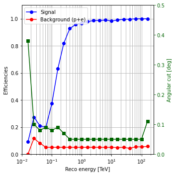
Efficiencies and rates as a function of score¶
[17]:
cut_diagnostic.plot_diagnostics()
/Users/michele/Applications/miniconda3/envs/protopipe/lib/python3.7/site-packages/ipykernel_launcher.py:67: RuntimeWarning: More than 20 figures have been opened. Figures created through the pyplot interface (`matplotlib.pyplot.figure`) are retained until explicitly closed and may consume too much memory. (To control this warning, see the rcParam `figure.max_open_warning`).
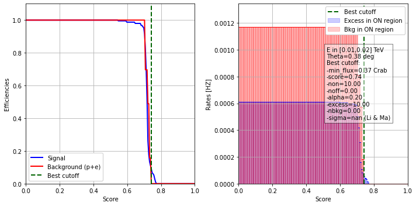
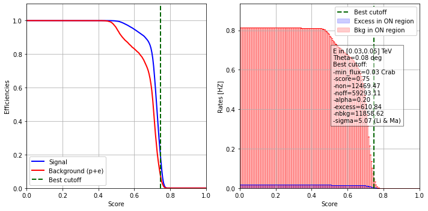
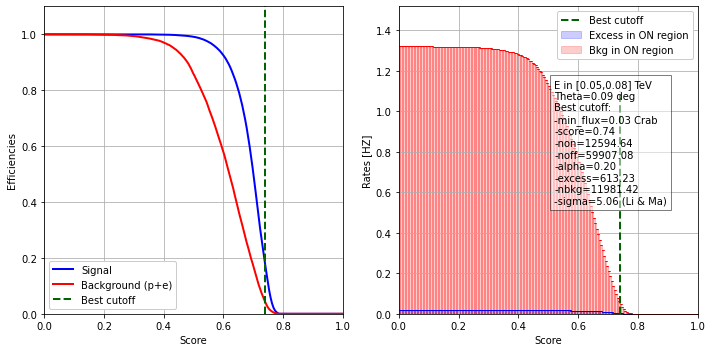
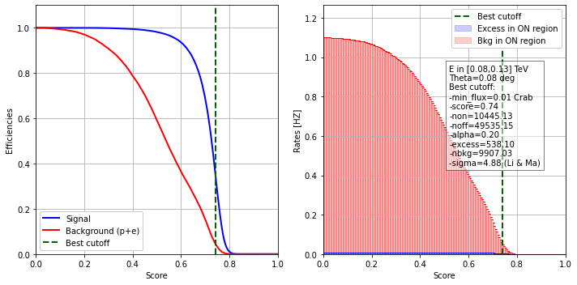
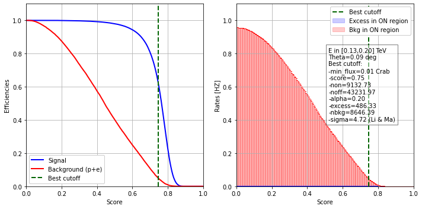
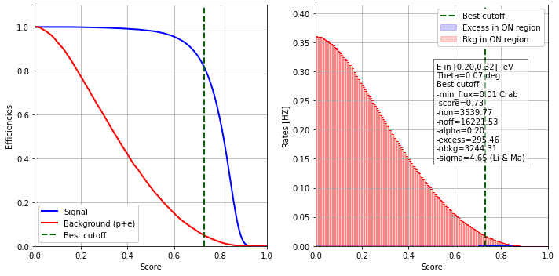
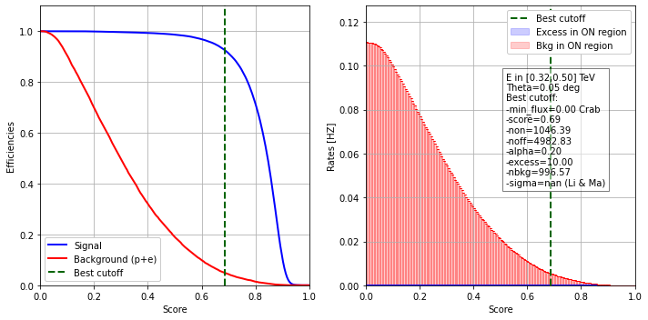
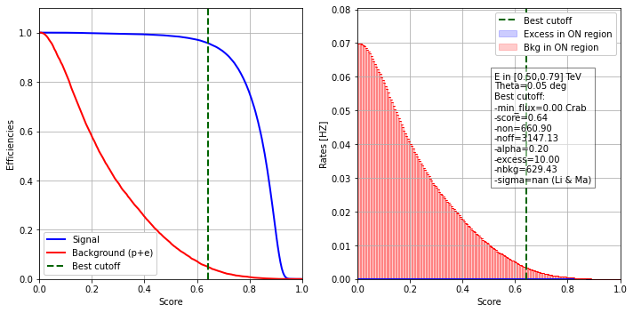
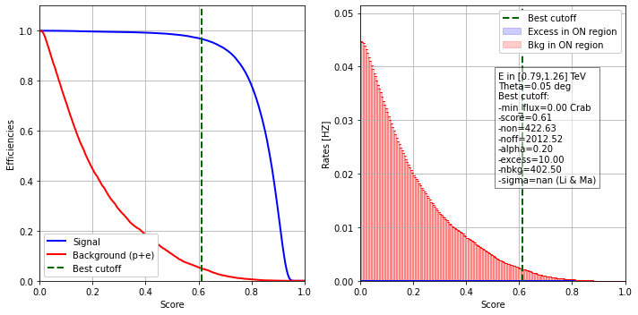
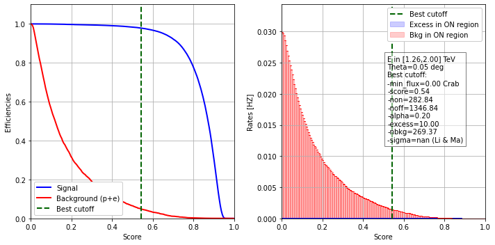
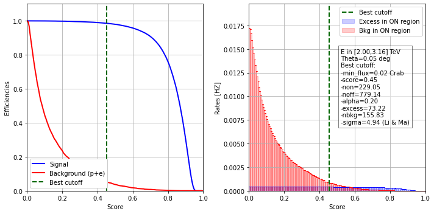
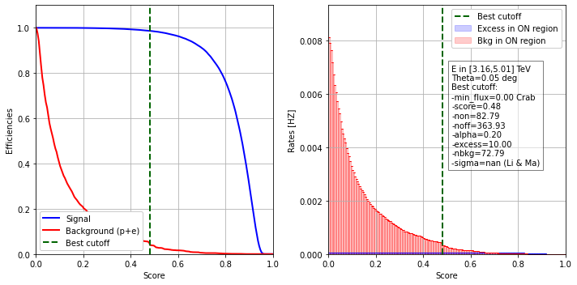
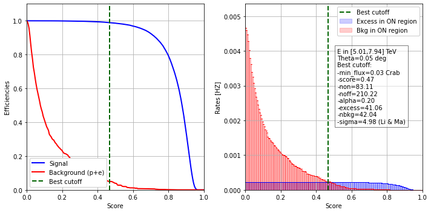
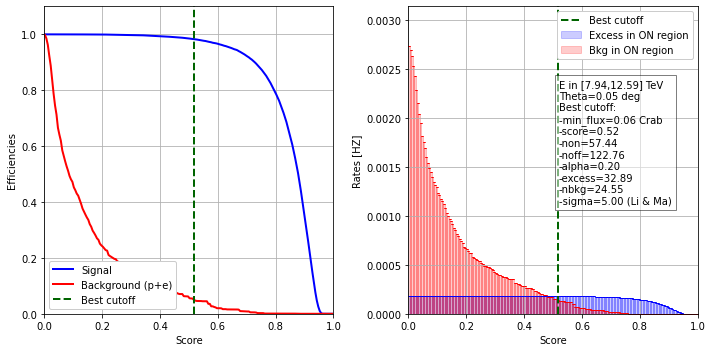
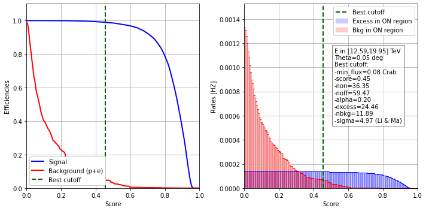
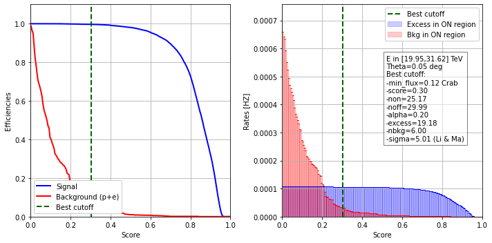
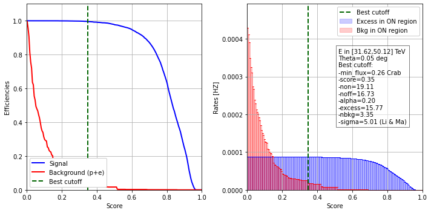
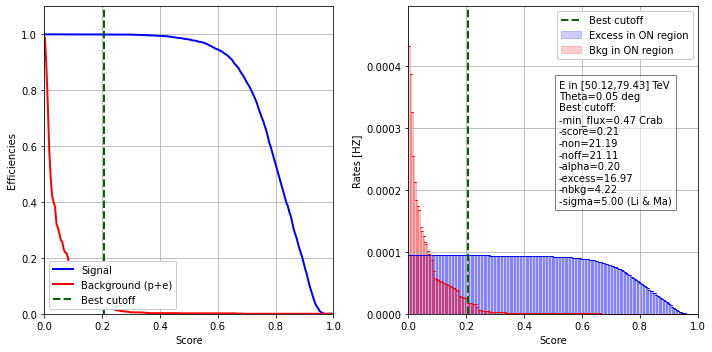
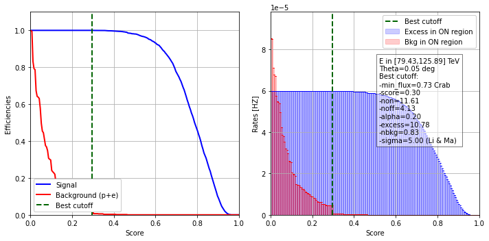
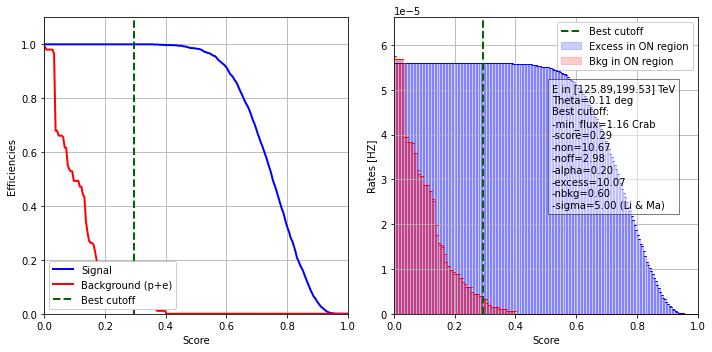
[ ]: